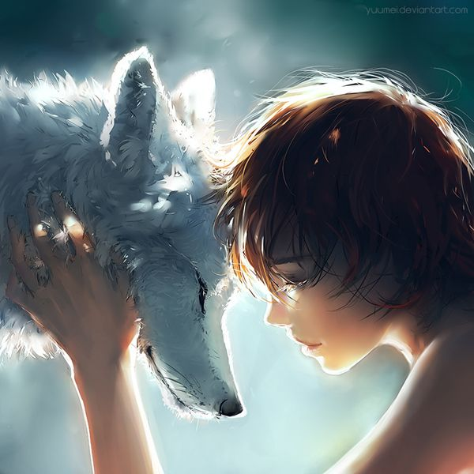

Digital
Digital art has come so far from when the idea was first introduced. In today's modern art programs, limitless ideas of the mind are capable. There are ways to look like you're painting digitally, ways to recreate architecture, ways to make your drawings look as hyperealistic as possible, and those are just the tips of the digital iceberg. There are complicated layers and unique brushes that, with the aid of a good tablet and pen, allow you to create literally anything at your fingertips.
Digital art is one of my top three favorite art mediums because of the potential and freedom for imagination.
